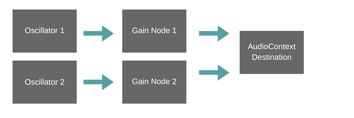
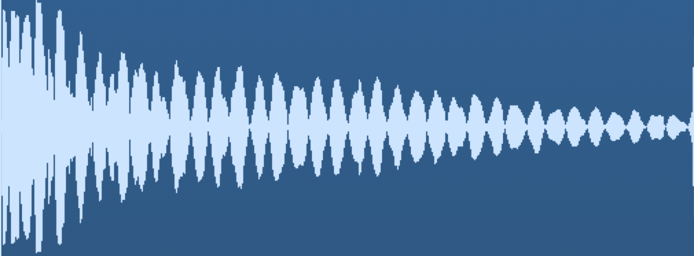
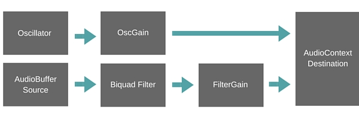
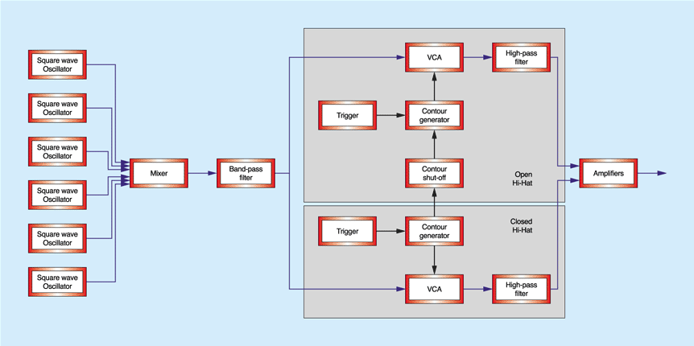
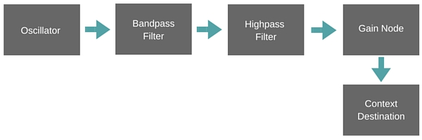

➝ ➝ ➝
So what is happening and how do we make it cool?
Sound synthesis is the technique of generating sound, using electronic hardware or software, from scratch.
Commonly used to generate interesting and unique sounds or timbres incapable of being produced acoustically, recreate or model the sounds of real-world acoustic instruments or sounds, or facilitate the automation of systems and processes (text-to-speech software, train station P.A.s)
Subtractive Synthesis
Additive Synthesis (and Resynthesis)
Component (Physical) Modeling Synthesis
Wavetable Synthesis
Vector Synthesis
LA (Linear Arithmetic) Synthesis
Phase Distortion Synthesis
FM (Frequency Modulation) Synthesis
Sample-Based (PCM) (S&S) Synthesis
Granular Synthesis
Subtractive Synthesis is a very simple signal chain of an oscillator (sound source) running through a filter (EQ curve) which is then sent to an amplifier for gain staging and ADSR control.From ProAudioFiles.com

Create audio context
window.AudioContext = window.AudioContext || window.webkitAudioContext;
var audioContext = new AudioContext();
Create our Oscillator nodes and Gain nodes using the createOscillator() and createGain() methods
var osc = audioContext.createOscillator();
var osc2 = audioContext.createOscillator();
var gainOsc = audioContext.createGain();
var gainOsc2 = audioContext.createGain();
Define the type of oscillators we’re going to use
osc.type = "triangle";
osc2.type = "sine";
osc.frequency.value = 40;
osc2.frequency.value = 80;
Automate the amplitude and frequency

The sound of a kick drum starts off with high attack and falls away rapidly. So to emulate this, we can use the methods setValueAtTime() or linearRampToValueAtTime() and exponentialRampToValueAtTime()
Automating our oscillator and gain nodes.
gainOsc.gain.setValueAtTime(1, audioContext.currentTime);
gainOsc.gain.exponentialRampToValueAtTime(0.001, audioContext.currentTime + 0.5);
gainOsc2.gain.setValueAtTime(1, audioContext.currentTime);
gainOsc2.gain.exponentialRampToValueAtTime(0.001, audioContext.currentTime + 0.5);
Do the same for the frequency values as well
osc.frequency.setValueAtTime(120, audioContext.currentTime);
osc.frequency.exponentialRampToValueAtTime(1, audioContext.currentTime + 0.5);
osc2.frequency.setValueAtTime(50, audioContext.currentTime);
osc2.frequency.exponentialRampToValueAtTime(1, audioContext.currentTime + 0.5);
Connect everything together
osc.connect(gainOsc);
osc2.connect(gainOsc2);
gainOsc.connect(audioContext.destination);
gainOsc2.connect(audioContext.destination);
Our final steps would be to start and stop our oscillators
osc.start(audioContext.currentTime);
osc2.start(audioContext.currentTime);
osc.stop(audioContext.currentTime + 0.5);
osc2.stop(audioContext.currentTime + 0.5);
We are only able to start and stop the oscillators once, so what I did was to put everything in a function
function kick() {
var osc = audioContext.createOscillator();
var osc2 = audioContext.createOscillator();
var gainOsc = audioContext.createGain();
var gainOsc2 = audioContext.createGain();
osc.type = "triangle";
osc2.type = "sine";
gainOsc.gain.setValueAtTime(1, audioContext.currentTime);
gainOsc.gain.exponentialRampToValueAtTime(0.001, audioContext.currentTime + 0.5);
gainOsc2.gain.setValueAtTime(1, audioContext.currentTime);
gainOsc2.gain.exponentialRampToValueAtTime(0.001, audioContext.currentTime + 0.5);
osc.frequency.setValueAtTime(120, audioContext.currentTime);
osc.frequency.exponentialRampToValueAtTime(0.001, audioContext.currentTime + 0.5);
osc2.frequency.setValueAtTime(50, audioContext.currentTime);
osc2.frequency.exponentialRampToValueAtTime(0.001, audioContext.currentTime + 0.5);
osc.connect(gainOsc);
osc2.connect(gainOsc2);
gainOsc.connect(audioContext.destination);
gainOsc2.connect(audioContext.destination);
osc.start(audioContext.currentTime);
osc2.start(audioContext.currentTime);
osc.stop(audioContext.currentTime + 0.5);
osc2.stop(audioContext.currentTime + 0.5);
};
Hear what kick() sounds like!
When you hit a snare drum, there’s a series of wire springs underneath it that rattles. That rattling can be synthesised using a burst of noise.
We use a random number generator!
Click here for an awesome article on generating different kinds of noise using web audio
Noise Generator
function noise() {
var node = audioContext.createBufferSource(),
buffer = audioContext.createBuffer(1, 4096, audioContext.sampleRate),
data = buffer.getChannelData(0);
for (var i = 0; i < 4096; i++) {
data[i] = Math.random();
}
node.buffer = buffer;
node.loop = true;
node.start(audioContext.currentTime);
node.stop(audioContext.currentTime + 0.2);
node.connect(audioContext.destination);
};
Graph of our snare drum connections

Added a filter in the signal flow, this is because we would want to remove any low frequencies generated by the noise to create a more realistic snare sound.
Create filter node
var filter = audioContext.createBiquadFilter();
filter.type = "highpass";
filter.frequency.setValueAtTime(100, audioContext.currentTime);
filter.frequency.linearRampToValueAtTime(1000, audioContext.currentTime + 0.2);
Add an oscillator and gain node to create that
sharp percussive sound
var osc3 = audioContext.createOscillator();
var gainOsc3 = audioContext.createGain();
osc3.type = "triangle";
osc3.frequency.value = 100;
gainOsc3.gain.setValueAtTime(0, audioContext.currentTime);
gainOsc3.gain.exponentialRampToValueAtTime(0.01, audioContext.currentTime + 0.1);
Hear what snare() sounds like!

Reference: Joe Sullivan’s Synthesizing Hi-Hats with Web Audio
Hi-hat graph

The sound of 6 oscillators
var fundamental = 40;
var ratios = [2, 3, 4.16, 5.43, 6.79, 8.21];
ratios.forEach(function(ratio) {
var osc4 = audioContext.createOscillator();
osc4.type = "square";
osc4.frequency.value = fundamental * ratio;
osc4.connect(audioContext.destination);
osc4.start(audioContext.currentTime);
osc4.stop(audioContext.currentTime + 0.05);
});
The sound of 6 square waves is quite massive. So our next step would be to run it through a bandpass filter
var bandpass = audioContext.createBiquadFilter();
bandpass.type = "bandpass";
bandpass.frequency.value = 10000;
Refine it so it sounds more percussive by using our gain node
to set the envelope
gainOsc4.gain.setValueAtTime(1, audioContext.currentTime);
gainOsc4.gain.exponentialRampToValueAtTime(0.01, audioContext.currentTime + 0.05);
Add a highpass filter to clear away the low frequencies
var highpass = audioContext.createBiquadFilter();
highpass.type = "highpass";
highpass.frequency.value = 7000;
Hear the sound of hi-hats!
Finally let's hear the sound of everything combined !